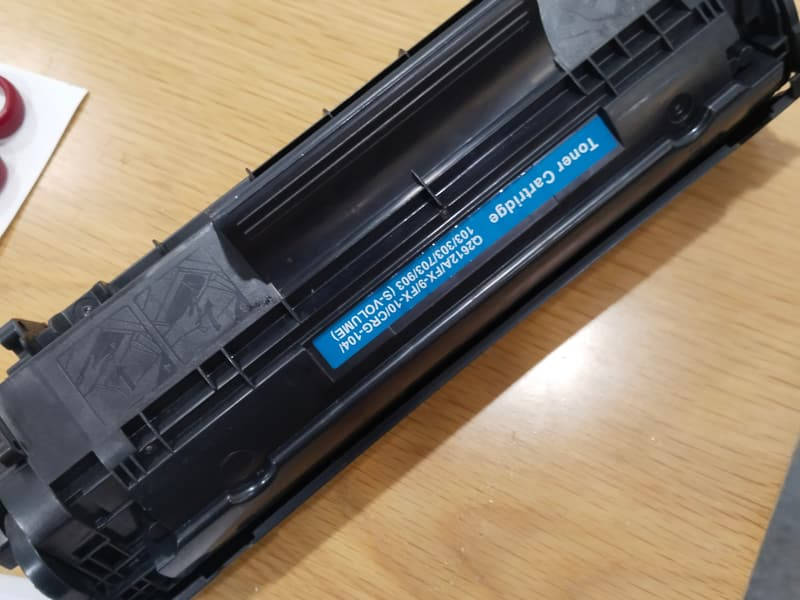

Nạp mực hay thay hộp mực mới? Bốn dấu hiệu để quyết
Câu này khách hỏi nhiều nhất, và câu trả lời "nạp được 4–5 lần" chỉ đúng một nửa. Cách chắc chắn hơn là nhìn bốn dấu hiệu trên bản in.

Vì sao vỏ hộp mực có giới hạn số lần nạp
Hộp mực không chỉ là cái bình chứa. Bên trong có trống cảm quang, trục từ, trục sạc và lưỡi gạt — tất cả đều là bề mặt tiếp xúc, và tất cả đều mòn theo số trang in.
Nạp mực chỉ thay phần bột. Các bề mặt kia vẫn tiếp tục mòn. Vì vậy tới một lúc, mực mới vẫn tốt nhưng trống đã xước và bản in vẫn kém — lúc đó nạp thêm là tiền bỏ đi.
Bốn dấu hiệu nên thay hộp mới thay vì nạp
- Sọc đen dọc lặp lại đúng chu kỳ trên mỗi trang. Đây là trống xước. Thay riêng trống được (180.000 – 280.000đ) nếu các phần khác còn tốt; nếu hộp đã nạp nhiều lần thì thay cả hộp hợp lý hơn.
- Lem mực dù vừa vệ sinh buồng mực. Lưỡi gạt đã hở, không gạt hết mực thừa. Thay gạt được, nhưng nếu đã thay một lần rồi lại hở thì vỏ hộp đã biến dạng.
- Nền xám mờ khắp trang, chữ vẫn rõ nhưng giấy không còn trắng sạch. Trục sạc xuống cấp — phần này thường không thay lẻ, nên đổi hộp.
- Vỏ hộp đã nạp từ 4–5 lần trở lên và bản in bắt đầu kém dần ngay sau mỗi lần nạp. Hộp đã hết tuổi.
Chênh lệch chi phí thật
Nạp mực hộp laser A4 là 80.000 – 140.000đ tuỳ hãng. Hộp mực mới nguyên bộ là 320.000 – 850.000đ. Nghe thì nạp rẻ hơn nhiều, nhưng phải tính theo số trang dùng được.
Một hộp còn tốt nạp 80.000đ in được 2.000 trang — tính ra 40đ mỗi trang. Cùng hộp đó khi đã mòn, nạp 80.000đ nhưng in 600 trang là đã sọc, phải nạp lại — thành hơn 130đ mỗi trang, và anh/chị còn mất thời gian gọi kỹ thuật hai lần.
Vì vậy chúng tôi nói thẳng khi hộp đã tới hạn. Nạp cho anh/chị thêm một lần thì chúng tôi có doanh thu, nhưng hai tuần sau anh/chị gọi lại với cùng vấn đề — và lần đó thì anh/chị không tin chúng tôi nữa.
Cần kỹ thuật xem trực tiếp?
Gọi 0703 525 478. Kỹ thuật xem máy rồi báo giá, anh/chị đồng ý thì mới làm.
Bài liên quan
Đặt nạp mực hoặc sửa máy in
Khu Nam TP.HCM — xem máy rồi báo giá, bảo hành theo số trang in.